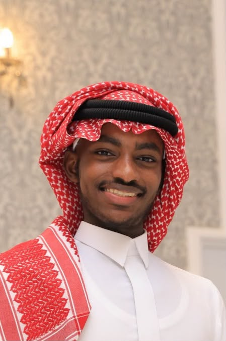

نربط الممارسين والخبراء لصياغة مستقبل برامج الشباب الجامعي
مجتمع ممارسة نوعي في مدينة جدة، يجمع العاملين والمهتمين ببرامج المرحلة الجامعية تحت مظلة واحدة، للتعلّم المشترك، وتبادل الخبرة، وصناعة أثر يمتد لما بعد اللقاء.
ما هي مدار الجامعيين؟
في كل مرحلة جامعية تُصاغ ملامح شخصية وتُرسم اتجاهات مستقبل. "مدار الجامعيين" وُلدت لخدمة من يقفون خلف هذه الصياغة — الممارسون والخبراء العاملون مع الشباب الجامعي.
ما هي المبادرة؟
تأسيس مجموعة اهتمام نوعية للعاملين في خدمة الشباب بالمرحلة الجامعية في محافظة جدة، تجمعهم تحت مظلة تعلّم وتطوير مستمر.
لمن هذا المجتمع؟
للممارسين المباشرين مع الشباب الجامعي، وللخبراء والمهتمين ممن تتقاطع تجربتهم مع احتياجات هذه الفئة، من داخل جدة وخارجها.
لماذا الآن؟
لأن جهود خدمة الشباب الجامعي في جدة متنوعة لكنها متفرقة. "مدار" يجمعها في مسار واحد، يوحّد الرؤية ويوسّع الأثر.
"المرحلة الجامعية هي نقطة التحوّل الأهم في حياة الشباب؛ فيها تتبلور الشخصية، وتتحدد المسارات. الاستثمار في هذه المرحلة استثمار في مستقبل الأفراد والمجتمع."
لماذا مدار الجامعيين؟
ثلاث ركائز شكّلت فكرة المبادرة من نقطة البداية.
لماذا مجتمع ممارسة؟
مجموعات الاهتمام خيار مثالي لبناء مجتمعات ممارسة متخصصة بتكلفة منخفضة وانطلاقة سريعة، تحقق تبادل خبرات عملية وتصل إلى رؤى استراتيجية مؤثرة، وتصنع نماذج تطبيقية قابلة للتكرار.
لماذا المرحلة الجامعية؟
فيها تتبلور الشخصية وتتحدد المسارات المهنية والاجتماعية. الاستثمار في برامجها يخلق آثارًا ممتدة، لأن ما يُبنى فيها يُعد أساسًا لمراحل الحياة اللاحقة.
لماذا مدينة جدة؟
حراك شبابي متنوع، لكنه يفتقر أحيانًا للتنظيم والتكامل. "مدار" يربط الجهات العاملة، وينسّق الجهود، ويستثمر الموارد المنتشرة لتحقيق أثر أوسع وأكثر استدامة.
من يشكّل مدار الجامعيين؟
فئتان مكمّلتان لبعضهما، يجمعهما اهتمام حقيقي بتطوير برامج المرحلة الجامعية.
الممارسون
العاملون بشكل مباشر ومستمر مع المرحلة الجامعية، سواء في المجالات التربوية أو الإرشادية أو التدريبية أو غيرها من الأدوار المرتبطة بخدمة هذه الفئة.
- عمل تربوي وإرشادي مباشر
- تصميم وتنفيذ برامج تدريبية
- احتكاك يومي مع الشباب الجامعي
الخبراء والمهتمون
أفراد يمتلكون خبرات سابقة أو حالية في العمل مع المرحلة الجامعية، من خلال أدوار متخصصة ومباشرة، أو عبر مجالات تتقاطع مع احتياجات هذه الفئة وتخدمها بشكل غير مباشر.
- خبرة استشارية أو بحثية
- اهتمام معرفي بقضايا الشباب
- رغبة في المساهمة والأثر
من يمكنه الانضمام؟
تجربة تعلّم وتواصل متكاملة
ثلاثة أنشطة متكاملة تصنع إيقاع المجتمع على مدار العام.
اللقاءات الدورية
لقاء لمدة 3 ساعات، يقدّمه أعضاء المجتمع أنفسهم وفق عنوان محدد سلفًا، لتبادل التجربة والمعرفة العملية.
الملتقى النوعي
ملتقى يمتد ليوم كامل، تُقدَّم فيه أطروحات نوعية وتجارب وممارسات من أعضاء المجتمع والضيوف والخبراء.
مجموعة التواصل
مساحة رقمية دائمة تجمع أعضاء المجتمع، تُطرح فيها المناقشات، وتتيح مساحة حيّة لتبادل الأفكار بين اللقاءات.
أثر يتّسع مع الزمن
من التعارف الأول إلى تأسيس كيانات متخصصة — هكذا يتدرّج أثر "مدار".
المدى القريب
جمع المهتمين، وتبادل الخبرات، والتعارف بين العاملين والتعرّف على الجهود القائمة.
المدى المتوسط
تنسيق وتعاون بين الأعضاء، وإجراء دراسات وأبحاث، وإطلاق مشاريع مشتركة.
المدى البعيد
تأسيس كيانات متخصصة، وإطلاق مشاريع تشاركية، وتوحيد الجهود في خدمة الفئة.
مؤشرات المخرجات المستهدفة
مجتمع في نمو مستمركيف نقيس النجاح؟
منظومة مترابطة من الفاعلين
ممارسون، خبراء، جهات، ومشاريع — تتقاطع جهودهم داخل مدار واحد.
مساحات قادمة للنمو والتوسّع
نبني "مدار" ليكون منصة مجتمعية متكاملة، تتّسع تدريجيًا لاستيعاب هذه المساحات.
مركز المعرفة
مكتبة رقمية تجمع مخرجات المجتمع من مقالات وأوراق وتجارب موثّقة.
- مقالات وأوراق تخصصية
- دراسات وأبحاث حول المرحلة
- تجارب وممارسات موثّقة
نظام الفعاليات
تقويم تفاعلي يجمع اللقاءات والملتقيات القادمة، مع أرشيف الفعاليات السابقة.
- فعاليات قادمة وتسجيل مباشر
- تفاصيل كل لقاء وملتقى
- أرشيف موثّق للأنشطة السابقة
من يقود مدار الجامعيين؟
فريق صغير بخبرة ممتدة، يؤمن بأثر المجتمعات النوعية.
م. راشد عليان
ميسّر المجتمعخبرة تتجاوز 10 سنوات في العمل مع فئة المرحلة الجامعية، مع اهتمام بتطوير قضايا الشباب وتصميم المبادرات والبرامج الشبابية، إضافة إلى خبرة في الاستشارات والتخطيط للمشاريع المجتمعية.

أ. محمد سندابي
منسّق المجتمعثلاث سنوات من الخبرة في المجال التربوي، ومشارك في عدد من المشاريع الشبابية، يقود التنسيق التنفيذي لأنشطة المجتمع ولقاءاته.
كن جزءًا من مجتمع يشكّل مستقبل برامج الشباب الجامعي
سواء كنت ممارسًا مباشرًا أو خبيرًا مهتمًا، مكانك في "مدار" محجوز. عبّر عن اهتمامك وسنعود إليك.
سجّل اهتمامك بالانضمام
عبّر عن اهتمامك عبر نموذج التسجيل الرسمي، وسيتواصل معك فريق المجتمع بعد مراجعة معايير الانضمام.
انضم معناسيفتح نموذج التسجيل في نافذة جديدة — لن تتم مشاركة بياناتك مع أي جهة خارجية.